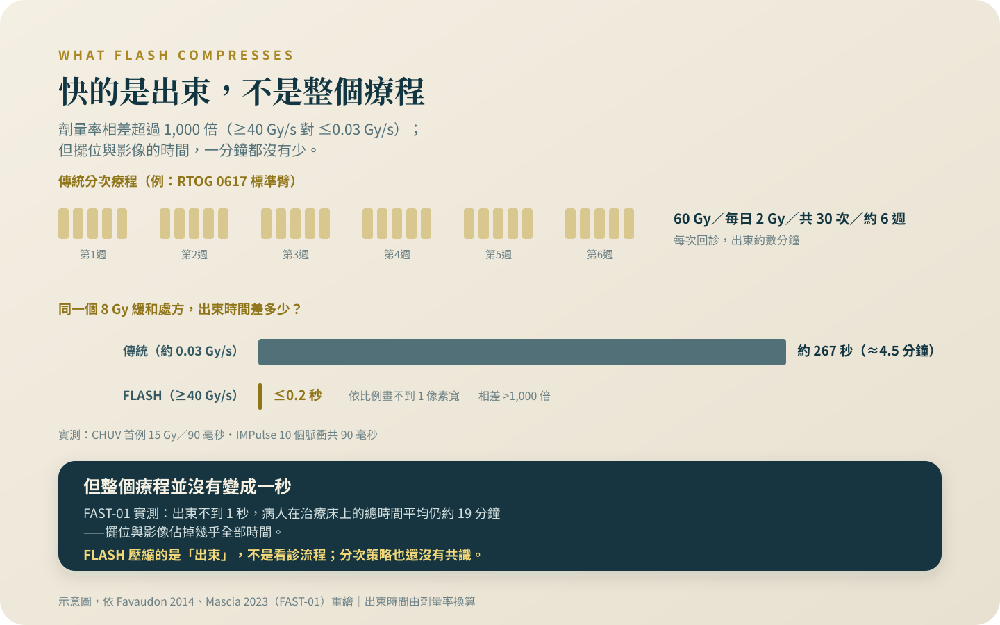

FLASH：一秒打完的放療，還在第一期
動物證據是真的，人體卻只有約三十人的第一期與可行性資料，沒有任何療效比較。它是這個專題裡讀新聞的第一堂課。
這篇的關鍵數字有兩個：新聞標題裡的「一秒」，和論文加總起來的「三十人」。聲量和證據在 FLASH 身上朝相反的方向走——這不是誰的錯，但剛好可以練一件事：把一則放療新聞，讀回它原本的大小。
警語一（排擠效應）：這個專題裡的治療，多數是自費、多數在標準治療之外。做決定之前要先知道，它們排擠掉的通常不是時間，是三樣真正有價值的東西：還沒用完的標準治療、後線會用到的錢、以及臨床試驗的資格（很多試驗會排除近期接受過其他實驗性治療的人）。還有一樣更難察覺——體能。在一個沒有效果的療程裡耗掉的體力，等到真正有用的選項出現時，可能已經撐不住了。所以問題不是「這個值不值得試」，是「做了這個，我放棄掉什麼」。
FLASH 跟本專題其他三種技術還有一個不同：它在台灣連付錢的路都不存在。所以它今天排擠掉的不是錢，是你的注意力和希望——這兩樣跟體能一樣，都是有限的。
警語二（找對的醫師）：這一類決定不要一個人做，也不要只聽提供這項治療的人說。你要找的是一個願意告訴你「這個不適合你」的醫師——如果對方從頭到尾沒有說過任何一句「不適合誰」，那不是諮詢，是推銷。
先說我的位置：質子與熱治療都是我自己領域內的技術，我服務的醫院也有相關設備。所以這個專題的每一條線，我畫得比別人更緊，不是更鬆。
它改變的只有一件事：多快打完
質子改變的是劑量在哪裡停，重粒子改變的是到了之後做什麼，FLASH 改變的是時間。傳統放療的劑量率大約每秒 0.03 葛雷（Gy）；FLASH 的操作定義是每秒 40 Gy 以上，相差超過一千倍——劑量率的意思是「每一秒鐘給出多少放射劑量」，所以 FLASH 是把整份劑量在不到一秒的出束時間內給完[1]。要先講清楚：FLASH 不是某一台機器的名字，是一個劑量率條件，不同裝置各自用不同方式做到它。
動物證據是真的，而且好看。2014 年發表在《Science Translational Medicine》的奠基研究，把小鼠胸腔分別用傳統劑量率與 FLASH 照射：傳統 15 Gy 引發肺纖維化，FLASH 到 20 Gy、追蹤超過 36 週都沒有出現肺部併發症；同一系列實驗裡，FLASH 抑制腫瘤的效果跟傳統照射相同——正常組織受保護、腫瘤控制不打折，這就是「FLASH 效應」[1]。這代表的是一個可重複、科學上站得住的動物現象；它不代表人體結論——為什麼會有這個效應，2025 年的機轉回顧直接寫明「機轉與影響因素仍不明確」，氧耗竭只是假說裡最有名的一個[2][3]。
人體證據全部加起來，大約三十個人
第一位接受 FLASH 治療的人在 2019 年的洛桑：一位多重治療無效的皮膚淋巴瘤病人，一顆 3.5 公分的皮膚腫瘤，15 Gy 在 90 毫秒內打完，三週時皮膚反應輕微[4]。90 毫秒很震撼，但這是一位病人的可行性觀察，不是試驗。
質子 FLASH 的首次人體試驗 FAST-01，收了 10 位四肢疼痛性骨轉移的成人，處方是 8 Gy 單次——跟傳統緩和放療一模一樣，差別只在劑量率；它問的是流程可行嗎、毒性如何、痛有沒有緩解，結果不良事件輕微、與傳統放療相當[5]。同一份論文裡有一個數字，專治「一秒鐘做完放療」的想像：射束確實不到一秒，但病人在治療床上的時間，平均仍是每個部位 15.8 分鐘——擺位和影像確認，一分鐘都沒省[5]。接續的 FAST-02 已在 2026 年發表：收案 12 位、實際治療 10 位胸腔骨轉移病人，同樣 8 Gy 單次，沒有出現第 2 級以上的相關不良事件[6]——這是安全性資料，仍然不是療效比較。
電子束這一邊：IMPulse 是黑色素瘤皮膚轉移的第一期劑量爬升試驗（劑量爬升的意思是一階一階往上試，找安全上限在哪裡），單次劑量從 22 爬到 28 Gy，收案 11 位、治療 10 位、共 15 個病灶，各劑量階都沒有出現劑量限制毒性；原計畫爬到 34 Gy，因為收案太慢，在 28 Gy 之後提前中止[7]——連第一期都收不滿，這句話應該貼在每一個「即將改變臨床」的標題旁邊。蘇黎世團隊把一台傳統加速器改裝出超高劑量率電子束，發表的是第一位病人的技術可行性報告[8]。全部加起來，到 2026 年 8 月為止發表過的人體經驗大約 30 位，每一個研究問的都是「打得出來嗎、安全嗎」；「FLASH 有沒有比傳統放療好」這個問題，沒有任何一個人體試驗問過，也不存在任何隨機比較[4][5][6][7][8]。

新聞聲量與證據量，在這裡成反比
這是本篇真正想講的一件事：四種技術裡，FLASH 的新聞最多、人體證據最少。這不是誰造假——動物數據是真的，物理是真的——是報導的選擇：「一秒打完」好下標，「十位病人的可行性試驗」不好下標。這個領域自己也清楚證據還沒到位：2019 年就有一篇回顧，標題直接問 FLASH 是「靈丹還是愚人金」，在熱潮裡把限制一條一條攤開[9]。所以 FLASH 新聞是練習讀新聞的好教材，方法是三個問題：分母是幾個人？終點問的是安全還是療效？對照組是誰？用這三題，把一則報導縮回它原本的大小——這把尺的完整用法，在〈新，不等於比較好〉。
從老鼠到診間，中間隔著哪幾道關
第一關是機轉：不知道效應從哪裡來，就很難知道哪些條件會讓它消失[2]。第二關是劑量測定：在每秒幾十 Gy 的條件下，現有的偵測器會飽和，量測與驗證本身就是難題[3]。第三關是分次：傳統放療分成數週有它的生物學理由，FLASH 要不要分次、怎麼分，2025 年 21 位國際專家的 Delphi 共識投了兩輪票，「多射束、多分次、單次劑量」三題都沒有達成共識[10]。第四關是深度：FAST-01 與 FAST-02 為了衝出超高劑量率，用的是穿透式質子束——讓質子直接穿過身體、不停在腫瘤裡，等於先放棄質子原本「劑量停在腫瘤」的優勢（那個優勢是怎麼回事，見〈質子：打得準，然後呢〉）；所以目前的人體 FLASH 全部是淺層或緩和情境，「質子的準」與「FLASH 的快」還不能同時擁有[3][5]。
台灣的現況是「查證過的零」
我查了國際臨床試驗註冊資料庫（2026 年 8 月 29 日）：全球以 FLASH 放療為題的註冊試驗共 6 筆，位於台灣的是 0 筆；我也查不到任何台灣機構宣布 FLASH 臨床計畫的官方公告[11]。所以 FLASH 在台灣的身分比「只有試驗」更低——連試驗都沒有，核准與給付更無從談起；這三件事為什麼要分開看，見〈核准、給付、有效，是三件不同的事〉。
這決定了它的排擠效應長什麼樣子。你沒有辦法為 FLASH 花錢，但你可以為它花掉兩樣同樣有限的東西：注意力，和希望。我最不希望看到的讀法是「更快的放療快來了，現在這個療程先緩一緩」——目前沒有任何證據支持為了等 FLASH 而延後、縮短或中斷任何治療；延誤的傷害是確定的，而另一頭，連下一批試驗該怎麼設計，都還在用專家共識慢慢訂[10]。
看到新聞的你，今天該做什麼
坦白說：今天沒有任何一種常見情況，會讓我在門診主動把 FLASH 放上治療選項的桌面。合理的接觸方式只剩一種——人在有試驗的國家、剛好符合骨轉移或皮膚轉移這類收案條件、經原治療團隊評估後參加試驗[6][7]；對其他所有人，它是一個可以關心的科學進展，不是一個可以要求的治療。所以看到新聞之後，你要做的事是：什麼都不改。療程照走、回診照排；真的想做點什麼，就把那則新聞帶去門診，問一句「以我的病況，現在站得住的選項有哪些」。對絕大多數常見癌症的病人，決定結果的是期別、亞型、和有沒有把療程完整做完，不是機器把劑量打多快。FLASH 有一天也許會改變放療的樣子；它今天不改變你的任何一個決定。
查證日期：2026 年 8 月。
看到 FLASH 的新聞，你不需要改變任何治療安排：療程照走、回診照排。真的想做點什麼，把那則新聞帶去門診，問一句「以我的病況，現在站得住的選項有哪些」。目前沒有任何證據支持為了等新技術而延後治療。
參考資料
Favaudon, V., Caplier, L., Monceau, V., et al. (2014). Ultrahigh dose-rate FLASH irradiation increases the differential response between normal and tumor tissue in mice. Science Translational Medicine, 6(245), 245ra93. DOI: 10.1126/scitranslmed.3008973
Feng, T., He, T., Ye, W., & Xiang, L. (2025). Influence factor and mechanism of FLASH effect. Frontiers in Oncology, 15, 1669228. DOI: 10.3389/fonc.2025.1669228
Vozenin, M. C., Bourhis, J., & Durante, M. (2022). Towards clinical translation of FLASH radiotherapy. Nature Reviews Clinical Oncology, 19(12), 791–803. DOI: 10.1038/s41571-022-00697-z
Bourhis, J., Sozzi, W. J., Jorge, P. G., et al. (2019). Treatment of a first patient with FLASH-radiotherapy. Radiotherapy and Oncology, 139, 18–22. DOI: 10.1016/j.radonc.2019.06.019
Mascia, A. E., Daugherty, E. C., Zhang, Y., et al. (2023). Proton FLASH Radiotherapy for the Treatment of Symptomatic Bone Metastases: The FAST-01 Nonrandomized Trial. JAMA Oncology, 9(1), 62–69. DOI: 10.1001/jamaoncol.2022.5843
Daugherty, E. C., Zhang, Y., Xiao, Z., et al. (2026). FAST-02: Results from the second in-human prospective evaluation of single-fraction proton FLASH for symptomatic thoracic bone metastases. Radiotherapy and Oncology, 222, 111671. DOI: 10.1016/j.radonc.2026.111671
Kinj, R., Schiappacasse, L., Grilj, V., et al. (2026). A phase I dose escalation of FLASH radiotherapy in patients with cutaneous metastases from melanoma: The IMPulse trial. Radiotherapy and Oncology, 221, 111414. DOI: 10.1016/j.radonc.2026.111414
von der Grün, J., Dal Bello, R., Psoroulas, S., et al. (2026). First-in-human e-Flash radiotherapy using a modified conventional C-arm linear accelerator. Clinical and Translational Radiation Oncology, 56, 101047. DOI: 10.1016/j.ctro.2025.101047
Wilson, J. D., Hammond, E. M., Higgins, G. S., & Petersson, K. (2019). Ultra-High Dose Rate (FLASH) Radiotherapy: Silver Bullet or Fool's Gold? Frontiers in Oncology, 9, 1563. DOI: 10.3389/fonc.2019.01563
Klaver, Y. L. B., Hoogeman, M. S., Lu, Q. R., et al. (2025). Requirements and Study Design for the Next Proton FLASH Clinical Trials: an International Multidisciplinary Delphi Consensus. International Journal of Radiation Oncology, Biology, Physics, 123(1), 296–305. DOI: 10.1016/j.ijrobp.2025.03.047
ClinicalTrials.gov。FLASH Radiotherapy for the Treatment of Symptomatic Bone Metastases in the Thorax（FAST-02，NCT05524064）。（ClinicalTrials.gov API v2 檢索：全球 "FLASH radiotherapy" 註冊試驗與台灣地區交叉查詢，查詢日 2026-08-29。）
本文為一般性衛教說明，整理自公開發表的研究與官方公告，不能取代面對面的診療。研究結果適用的族群通常有嚴格條件，是否適用於你的情況，請與你的主治醫師討論。請勿依據本文自行調整、中斷或更換治療。
← 回到次世代治療專題